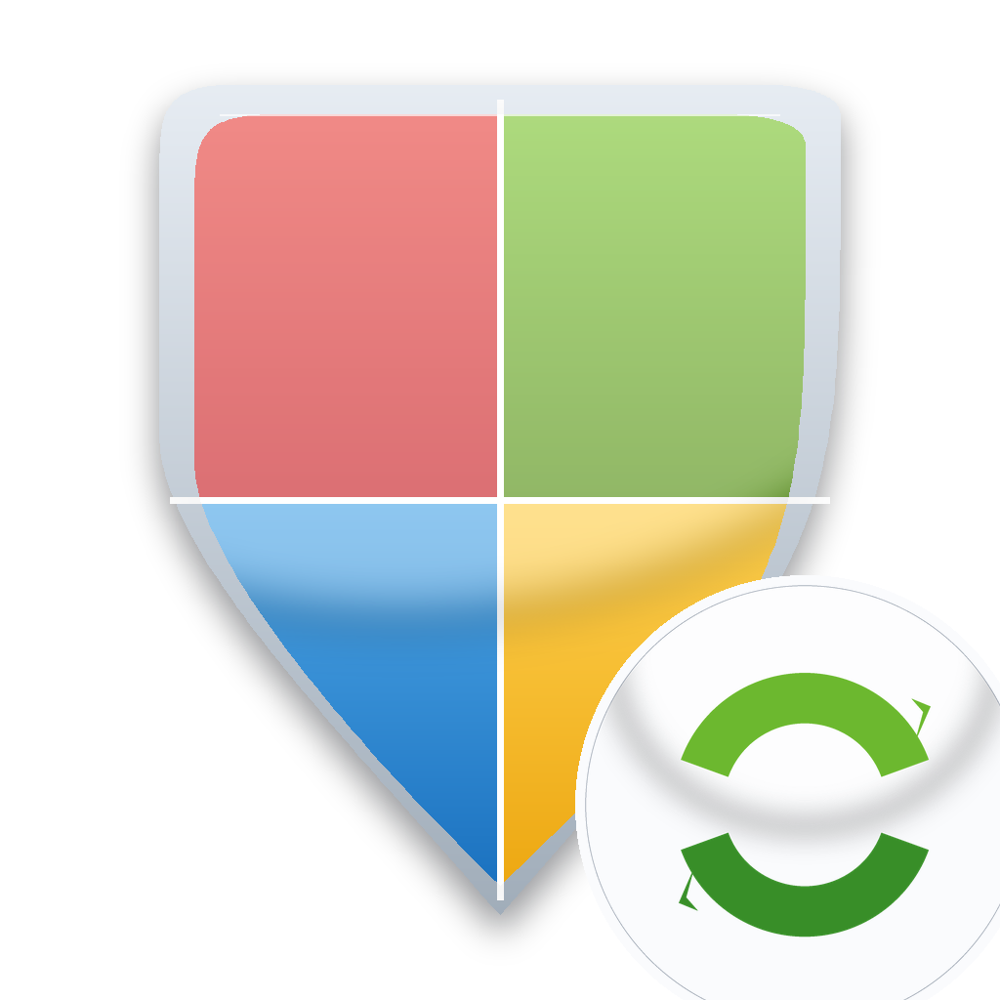

Vista reached end of support in 2017, but Microsoft's classic signature endpoint
(go.microsoft.com/fwlink/?LinkID=121721) still serves the current Microsoft Antimalware package.
WDUV unpacks it in pure Go and applies it to Defender with a full safety net.
Timestamped copy of every signature file + manifest before anything is touched. rollback restores files, removes created ones and restores registry values.
update -dry-run walks the whole pipeline — download, extraction, per-file report — without touching the system.
WinDefend is stopped before files are copied (it locks them) and always started again, even after failures.
A faithful Go port of libmspack's LZX decompressor unpacks engine + stub from the 221 MB package. Validated byte-for-byte against cabextract.
Legacy builds are made with Go 1.20.14 and patched to PE minOS 6.00 — mainline Go 1.21+ stamps 10.0 and Vista's loader rejects those outright.
Microsoft stopped publishing Vista-compatible engines long ago; for a controlled update use apply -local with files you have vetted.
# see what Defender has right now vista-defender-update.exe status # full pipeline: download, unpack, backup, apply, registry, service vista-defender-update.exe update -dry-run vista-defender-update.exe update # controlled apply from files you have vetted yourself vista-defender-update.exe apply -local C:\sigs vista-defender-update.exe backup vista-defender-update.exe rollback
| Folder | Compression | Contents |
|---|---|---|
| 0 | LZX, 2 MiB window | mpengine.dll, MpSigStub.exe |
| 1 | stored | mpasbase.vdm |
| 2 | stored | mpasdlta.vdm, mpavbase.vdm, mpavdlta.vdm |
The downloaded package is a small PE whose .rsrc section carries one large CAB archive.
A naive “scan for MZ / VDM magic” extractor cannot work here — the real structure is a named-file cabinet,
which is exactly what WDUV parses.
apply -local
when in doubt.